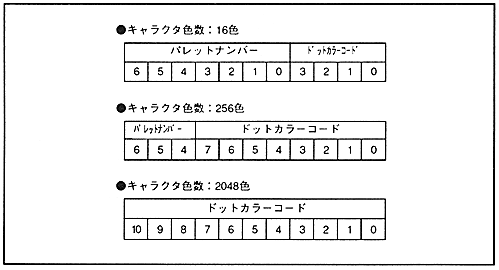

The pallet number is 7-bit data, and specifies the start address of the color pallet used for the character pattern displayed at that position. This data is used only when the color format is palette format, not when it is RGB format. The palette number is attached to the dot color code of the character pattern and combined into 11-bit dot color data, so the bits used depend on the number of character colors. The configuration of 11-bit dot color data is shown in Figure 4.11.
Figure 4.11 Dot color data based on the number of character colors
